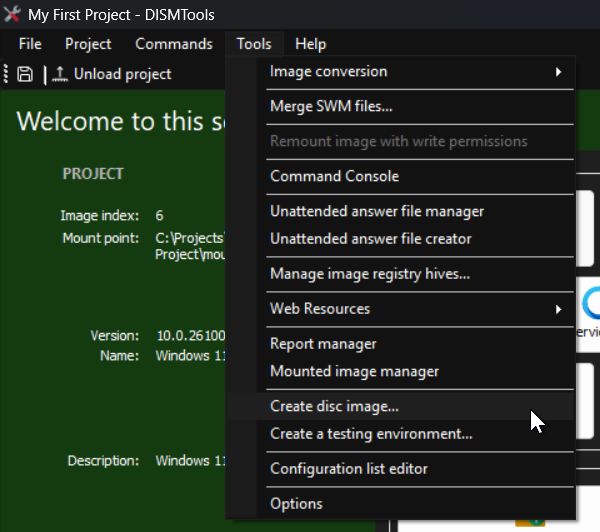
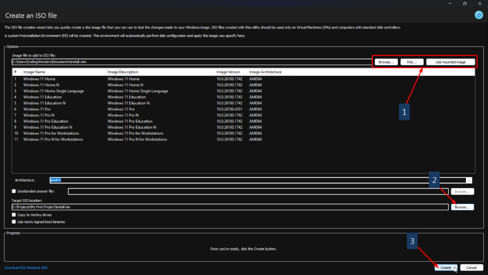
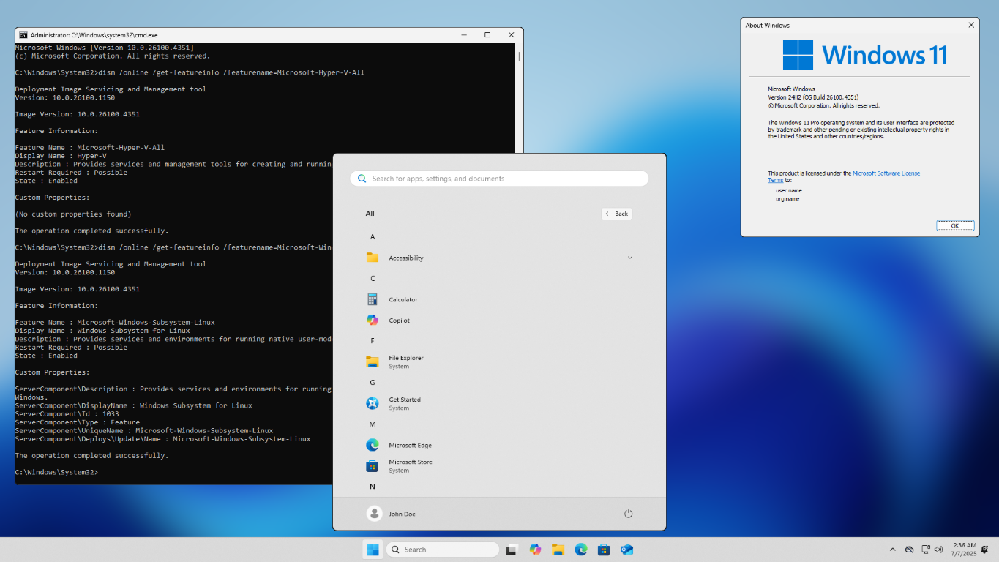

Let's install your Windows image to some computers, shall we?
Speeding up the installation process
One of the requirements is for all computers to have a local account named "John Doe". Another requirement is to skip as many questions in the OOBE as possible. All of this can be completely automated with an unattended answer file. To begin creating them, you can use the creation wizard. To access it, go to Tools and then click Unattended answer file creator.

Note:
You may see the following dialog when you start this task:

This can happen if you don't have the .NET 9 desktop runtime, which is a requirement for the underlying answer file generator program. You can proceed in 2 ways: by downloading the .NET 9 Desktop Runtime, or by letting DISMTools download the self-contained version after clicking Yes.
Also note that the .NET Runtime requirement may change in the future once the underlying component in question uses a new runtime.
Then, you can follow the steps in the wizard. Eventually, you will have an unattended answer file and arrive at this screen:

On this screen you can perform more tasks with the wizard, such as creating another answer file or opening its location. The task we are interested in performing is applying the answer file. Click the third link and then click OK in this dialog:

Finally, save your changes. Now, we'll create the ISO file.
Creating the ISO file
To begin ISO creation, head over to Tools and then click Create disc image...
Note:
This task requires the Windows Assessment and Deployment Kit (ADK). If DISMTools can't detect it, you will be given the option to automatically download and install the latest one for you.

This can take some time, during which you will see some progress information:

After installation, you can continue normally.
You will see the following window:

In this window, you will have to follow these steps
-
Choose your Windows image. You can choose it using one of 3 buttons you will find on the top:
- Browse... will let you specify a Windows image in any location
- Pick... will let you specify a Windows image from all mounted images. You will see a list from which you can pick it
- Use mounted image will use the image you're currently working on
- Choose a destination for your ISO file
- Click Create. Note that, if the destination ISO file exists, it will be overwritten; and that you need to make sure the Windows image has all its changes saved
To summarize these steps, here is a picture featuring them:
These are the essential steps. You can configure more, like copying to Ventoy drives, if you want. But, in this example, we'll continue with the defaults. After clicking OK, a new window will appear. This window will create the ISO file that you can later use:

This will take some time, so feel free to do other things. After creation is complete, you can now use your ISO file. You can:
- Use your ISO file on a Virtual Machine
- Flash it to a USB drive with Rufus
- Copy it to a Ventoy drive
We'll continue by installing the OS in a virtual machine.
Installing the target system
To do this, boot your system to the ISO:

Then, follow the steps in the installation wizard:

Note:
Choose the target disk or volume carefully as you may delete all your files inside it. Also, take note of the index of the image you are modifying in case the image has multiple indexes.
You should have the target system ready soon. It will take a while, depending on the speed of your computer. These are the results you should get with your Windows image:
This is a composite image where the only change is the wallpaper. You should still see the rest of the changes.
Final Remarks
If you have a computer lab, and want to deploy this image to multiple computers at the same time, you can opt to perform a network-based installation. While this Tour won't cover it, you can still learn how to do this by going to the Help documentation.
Note:
DISMTools only supports Windows Deployment Services at the moment, and the guide in the Help documentation is designed for this deployment solution.
Congratulations! You have finished the Tour
You may now continue customizing and testing your Windows image, or start a new project with a new image. The possibilities are endless. If you ever get lost, or want to learn more about what DISMTools has to offer, don't hesitate to look at the Help documentation. You can also open the Tour at any time.